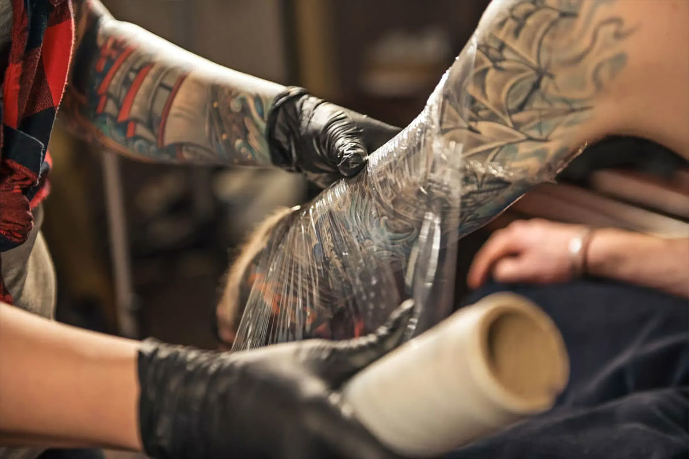

Cuidados
Sin lugar a dudas, el momento en el cual el cuidado posterior del tatuaje es más importante es justo después de hacerse el tatuaje y hasta aproximadamente 3 semanas después, cuando las capas superiores de la piel se hayan cicatrizado por completo. Este período de tiempo es cuando el riesgo de infección es máximo y también cuando la apariencia de un tatuaje puede arruinarse fácilmente debido a la falta de cuidado posterior.
Una vez que tu artista quede satisfecho con su trabajo, limpiará suavemente la zona tatuada con jabón suave, agua y algún otro tipo de ungüento antibacteriano. Esto puede picar un poco.
Una vez que el artista haya terminado de limpiar la zona, procederá a vendar tu tatuaje. Esto se hace para mantener la zona protegida contra las bacterias y también para evitar roces. Gracias a una anterior limpieza con jabón antibacteriano, la zona vendada debe estar libre de bacterias al 99,9 % en el momento de vendarla. Lo más probable es que la venda esté hecha de un apósito de tela estéril o de un material plástico similar a una película adhesiva. Cualquiera de estos materiales cumple su función con eficacia, así que no te preocupes si te ponen uno u otro.